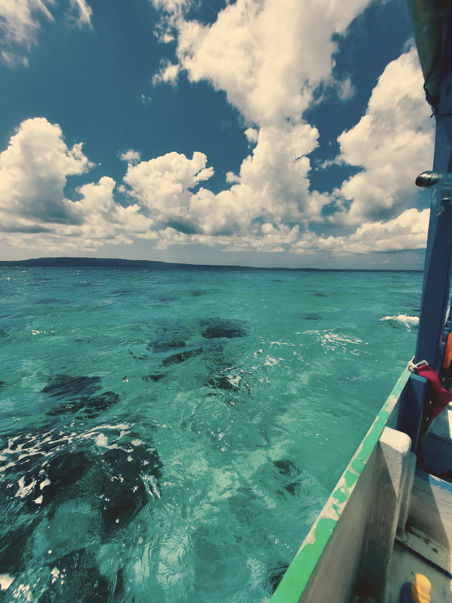
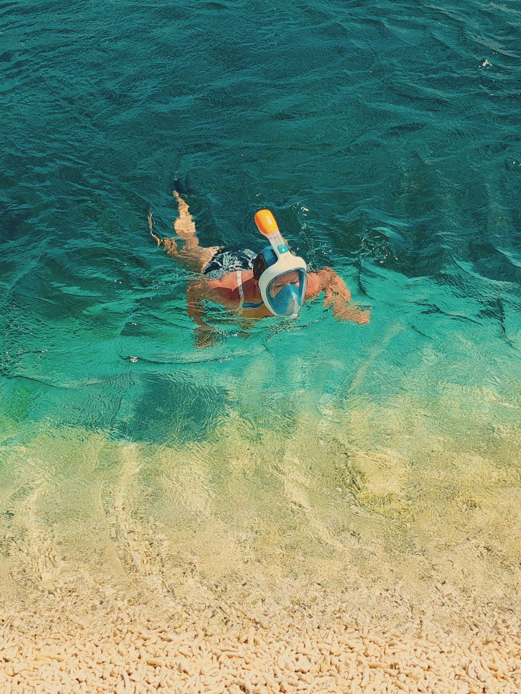
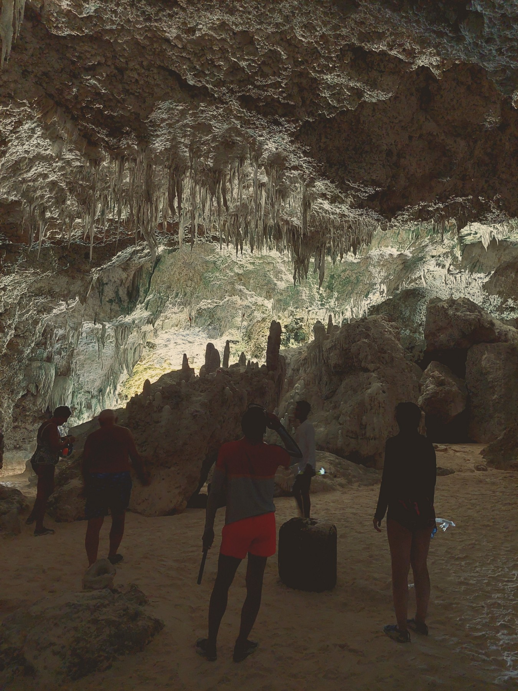
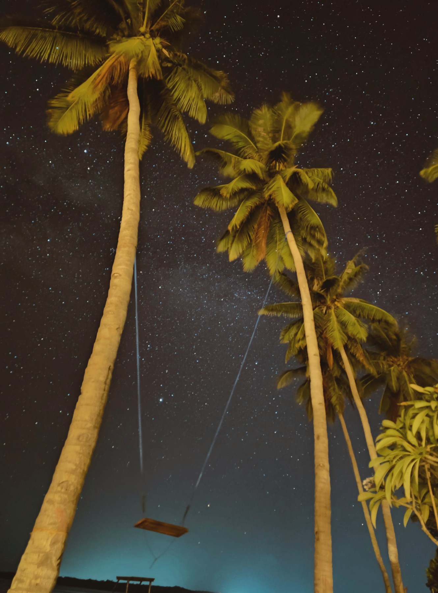

29 November 1605 — 2026
Selamat
Hari Jadi
ke-421
Kabupaten Kepulauan Selayar
Geser →

Hari Jadi Selayar ke-421
Bangga pangan lokal
Tema tahun ini: “Pangan Lokal Mendukung Ketahanan Pangan Nasional”. Dari laut dan kebun Selayar, untuk Indonesia.
SunaRi · Selayar#HariJadiSelayar42102 / 10

Hari Jadi Selayar ke-421
Laut yang memberi
Air toska, pasir putih, dan karang yang terjaga. Laut Selayar adalah rumah, sumber kehidupan, dan kebanggaan kita.
SunaRi · Selayar#HariJadiSelayar42103 / 10

Hari Jadi Selayar ke-421
Taman bawah laut
Karang dan ikan warna-warni di perairan Selayar. Jaga bersama, wariskan untuk anak cucu.
SunaRi · Selayar#HariJadiSelayar42104 / 10
Hari Jadi Selayar ke-421
Pulau-pulau yang memesona
Bahuluang, Gusung, Polassi, Tambolongan. Hanya sebagian kecil dari keindahan Kepulauan Selayar.
SunaRi · Selayar#HariJadiSelayar42105 / 10
Hari Jadi Selayar ke-421
Daratan sesaat
Saat air surut, gosong pasir putih muncul di tengah laut. Keajaiban kecil dari pasang-surut Selayar.
SunaRi · Selayar#HariJadiSelayar42106 / 10

Hari Jadi Selayar ke-421
Gua yang dibentuk laut
Gua Lipang di Pulau Bahuluang: stalaktit menggantung, lantai pasir putih, sejuk di dalam.
SunaRi · Selayar#HariJadiSelayar42107 / 10
Hari Jadi Selayar ke-421
Senja di pesisir barat
Setiap sore matahari tenggelam di depan Pantai Sunari. Hadiah kecil dari Selayar untuk siapa saja yang singgah.
SunaRi · Selayar#HariJadiSelayar42108 / 10

Hari Jadi Selayar ke-421
Malam yang tenang
Langit berbintang di antara pohon kelapa. Selayar mengajarkan kita untuk berjalan pelan.
SunaRi · Selayar#HariJadiSelayar42109 / 10

29 November 2026
Selamat Hari Jadi
ke-421, Selayar
Dari tepi Pantai Sunari, kami turut merayakan 421 tahun Selayar. Semoga laut dan tanahnya terus memberi berkah untuk kita semua.
Keluarga besar SunaRi Beach Resort Selayar
Pantai Sunari · Selayar
#HariJadiSelayar421 · #sunarisunsetmoment